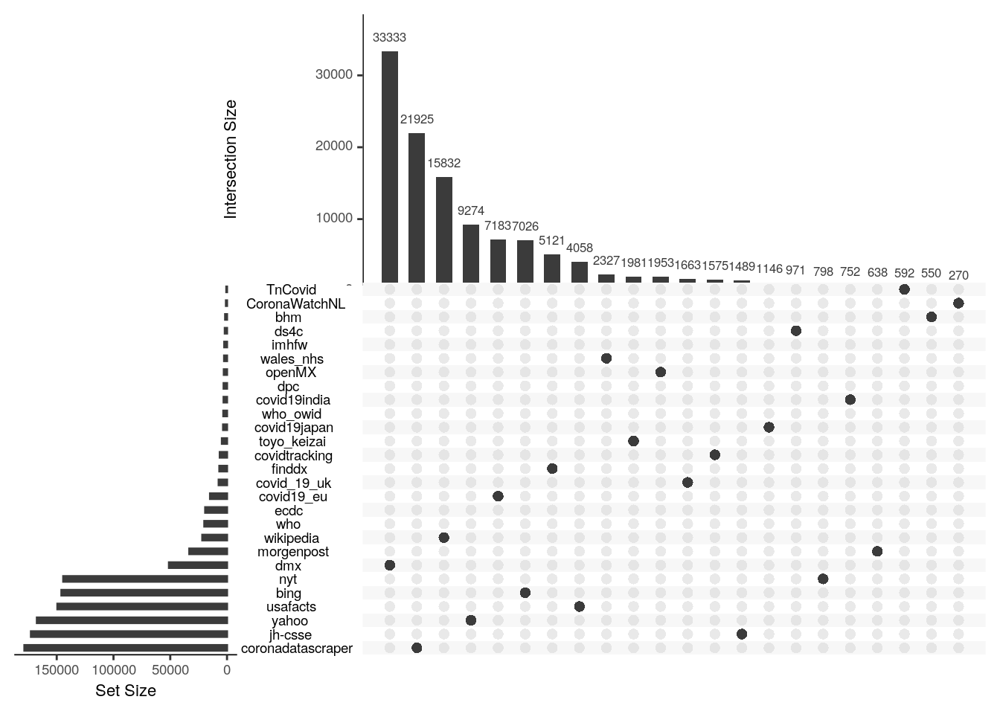

Chapter 4 COVID-19 Measurement
Government and health institutions around the world are racing to produce measures of the COVID-19 pandemic and response. This chapter catalogs and compiles a wide range of measures and evaluates their potential for helping us to infer what we cannot directly measure about the pandemic.
4.1 Executive Summary
COVID Survailance Number of Tests Performed Number of Confirmed Cases Number of Fatalities due to COVID-19
Influenza Surveillance Influenza Tests Performed Percent of Influenza Tests Positive
Mortality Influenza and
Any data aggregation and cleaning approach will have to deal with the following issues
- Missingness
- Prior to the first reported observation
- After the last reported observation
- Within a time series between observations
- Unbalanced across different sources
- Structural Changes
- Changes in reporting criteria/definitions
- Changes in sourcing for unerlying data
- Disagreement
- One or more sources report different numbers
- Errors
- Outliers
- Merging errors
- Bias
- Correlation between missingness and measurement
- Attenuation bias
4.1.1 Unit of Analysis and Definition of Measurements
The unit of analysis is the location-day. Locations can appear multiple times as aggregation in larger locations, e.g. the United States, Texas, and Bexar County all appear in the data. The raw data are produced by different institutions at different levels of political aggregation, and so there’s no guarantee that totals across lower levels of aggregation will equal totals at a higher level of spatial aggregation. The raw data record 3 measurements, CONFIRMED, DEATHS, and TESTED CONFIRMED should be the cumulative number of COVID-19 positive cases recorded in that location by and including that date. DEATHS which should be the cumulative number of deaths attributed to COVID-19. TESTED should be the cumulative number of test performed up to and including that date. When provided, we distinguish between TESTED_PEOPLE and TESTED_SAMPLES, where multiple tests may be necessary per person due to false positive and false negative rates. At this stage, these definitions should be taken as platonic constructs. It is how they are named and described in databases, news reporting, and government statistics, but that have wildly varying mapping between the reported number and the real world underlying theoretical measure.
4.1.2 Fist Order Cleaning Steps
We take a conservative approach to data cleaning, rejecting noisy and contradictory observations as more representative of the data entry and institutional data generating processes than the underlying empirical data generating process that we actually care about. Our raw database begins with 1277219 rows. Removing rows with missing date information and collapsing duplicate dates from the same database taking the max of each value reported, reduces that number to 1074415 rows. We then further reject any row with: negative counts, death counts greater than confirmed, or a cumulative count not strictly greater than or equal to the day prior. Our theory of missingness is that very small or zero values are not meaningfully distinguishable from missing. We therefore set any 0 values to NA, and drop any rows with less than 2 confirmed cases. This reduces the count further to 978650 dataset-location-day observations.
4.2 COVID-19 Survailance
4.2.1 Sources of Data
The Global Census of Covid-19 Counts (GC3) currently aggregates 31 databases. The databases vary drastically in size, scope, collection method, and purpose. On the small end are small github repositories built around collecting a single country’s published statistics, often available in an unstructured form on a government website in a native language. Others are official government statistics reported directly to and compiled by international organizations, like the World Health Organization (WHO) or the European Centre for Disease Prevention and Control. Some are news organizations that collect and compile official government statistics, like the New York Times and Reuters. Nonprofits like the Covidtracking Project compile records on specific issues like testing. Wikipedia provides an interface for a massive army of volunteers to enter in statistics into tabular formats that can later be scraped. The largest and most comprehensive scraping effort is the Corona Data Scraper from the Covid Atlas which only consumes sources directly from government and health organizations (excluding news and wikipeda). These all in turn are then ingested by larger aggregation projects. Johns Hopkins University Center for Systems Science and Engineering (JHU-CSSE) is the most widely used aggregator by downstream projects. Both Microsoft’s Bing research Unit and Yahoo! have in turn recently made available their knowledge graph coverage of Covid-19 counts.
Their names, links, and cleaned observation counts appear in the table below.
Which databases will provide the most unique information is difficult to tell apriori. The Upset plot below shows the number of unique location-day-variable observations provided by each database along the vertical axis and the number found only in that database an no other. In general, the databases with the most observations and that rely on direct collection from raw sources rather than aggregation of others, tend to provide the most unique information. For example, Corona Data Scraper provides both the most total and most unique observations. The most unique contributions come from the Corona Data Scraper Project, which might be anticipated by their overall size. The second most unique observations however comes from Wikipedia which is surprising because our treatment of it is currently ad hoc and it should already be ingested by other sources. It goes to show that no single source, or even no small combination of sources, is sufficient to provide full temporal and spatial coverage over even this relatively brief period of the Covid-19 pandemic.

4.2.1.1 What is their geographic coverage?
4.2.1.2 Country Level Data Availability
Despite this major effort by data producers, collectors, and aggregators, there is still major geographic variation in availability across countries. Most notably in availability of counts on number of tests performed, particularly in Central Africa.
Figure 4.1: Data coverage by country.
4.2.1.3 State/Province Level Data Availability
Disparities in coverage across countries is most dramatic at the subnational level.

Figure 4.2: Data coverage by State/Province
4.2.2 County District Level Data Availability
This takes a long time to run so we’re disabling it until the end
This takes a long time to run so we’re disabling it until the end
4.2.3 What is their temporal coverage?
4.2.3.1 Coverage Across Three Countries
Figures x,y,z illustrate the problem of data coverage for 3 countries, China, Italy, and the U.S.
China outright refuses to release daily counts of testing. Only three databases document the beginning of the outbreak, the ECDC, the WHO, and Yahoo. On April 17, China changed its reporting which added 1,290 more deaths for Wuhan city only. The change is not retrospective, it shows up only a sharp discontinuity across multiple datasets.

Italy’s coverage across datasets is fairly good and uniform, though there are breaks in coverage of testing for some datasets as well as variation in when each dataset starts tracking testing.

The U.S. has a great deal of coverage, but also a great deal of disagreement in that coverage. There is a stair step pattern in confirmed and deaths for Bing, WHO, and Wikipedia. In others reporting from day to day looks more continuous. There is also a change in reporting in late February that shows us a sharp vertical discontinuity across most datasets, though the size of the jump varies. There is also less temporal coverage of testing than is available from the caronavirus tracking project at the state level. Why those state level estiamtes aren’t totaled and available at the national level is a question.
New York has been the most heavily hit by COVID-19 in the U.S. Two sources, CornaDataScraper and the Covid Tracking Project have coverage over nearly the entire period. However, only one shows a sharp discontinuity in testing around March 10th. Digging into that disagreement more, the CTP rates New York’s data release a B quality, coming from snapshots of press conferences and then switching to screenshots of New York’s “Department of Health Covid-19 Tracker” website.


4.2.4 Where and How do they Disagree?
4.3 Influenza Survailance
This is the main page for links on weekly mortality data https://www.cdc.gov/nchs/nvss/vsrr/covid_weekly/ “The National Center for Health Statistics (NCHS) uses incoming data from death certificates to produce provisional COVID-19 death counts. These include deaths occurring within the 50 states and the District of Columbia. COVID-19 deaths are identified using a new ICD–10 code. When COVID-19 is reported as a cause of death – or when it is listed as a “probable” or “presumed” cause — the death is coded as U07.1. This can include cases with or without laboratory confirmation."
“Provisional COVID-19 Death Counts by Week Ending Date and State” https://data.cdc.gov/NCHS/Provisional-COVID-19-Death-Counts-by-Week-Ending-D/r8kw-7aab
There is technically raw data but the csv is aweful Gives you age stratified number tested and the percent positive https://www.cdc.gov/coronavirus/2019-ncov/covid-data/covidview/05082020/csv/public-health-lab.csv https://data.cdc.gov/api/views/r8kw-7aab/rows.csv?accessType=DOWNLOAD
For now I might have to download this all by hand
CDC COVID-NET Weekly Report: COVID-19-Associated Hospitalizations Application Quick Reference Guide https://gis.cdc.gov/grasp/COVIDNet/Documents/316429-A_FS_COVID-NET%20Helpquick%20Reference%20Guide_FINAL.pdf “Data gathered are used to estimate agespecific hospitalization rates on a weekly basis and describe characteristics of persons hospitalized with COVID-19. Laboratory confirmation is dependent on clinicianordered SARS-CoV-2 testing. Therefore, the rates provided are likely to be underestimated as COVID-19-associated hospitalizations can be missed due to test availability and provider or facility testing practices.”
“Mortality Surveillance The National Center for Health Statistics (NCHS) collects death certificate data from vital statistics offices for all deaths occurring in the United States. Based on death certificate data available on May 7, 2020, 10.6% of all deaths occurring during the week ending May 2, 2020 (week 18) were due to pneumonia, influenza or COVID-19 (PIC). This is the third week of a stable or declining percentage of deaths due to PIC;”
https://www.cdc.gov/nchs/nvss/covid-19.htm Updated daily, Monday–Friday
Provisional Death Counts for Coronavirus Disease (COVID-19)
Tabulated data on provisional death counts for COVID-19, by week, jurisdiction, and age in the U.S.
Updated weekly
Weekly State-Specific Data Updates by Select Demographic and Geographic Characteristics
Tabulated data on provisional COVID-19 deaths by race and Hispanic origin
Updated weekly
Excess Deaths Associated with COVID-19
Visualizations of estimates of excess deaths related to the COVID-19 pandemic